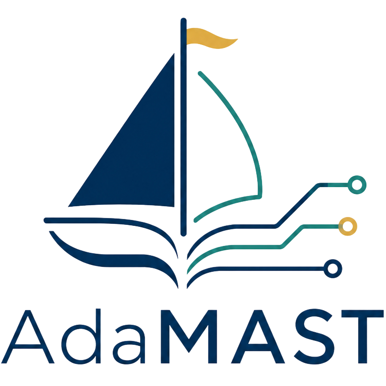
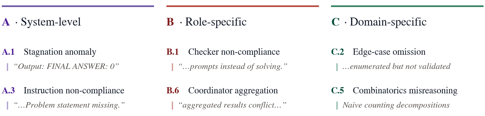
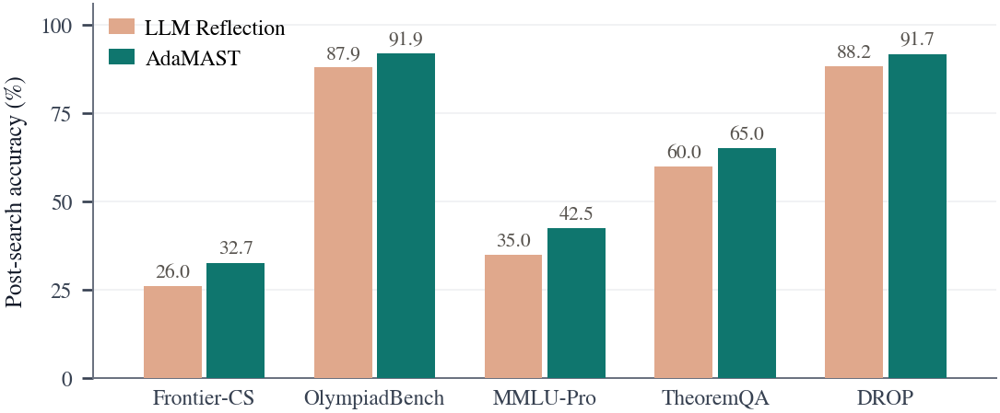
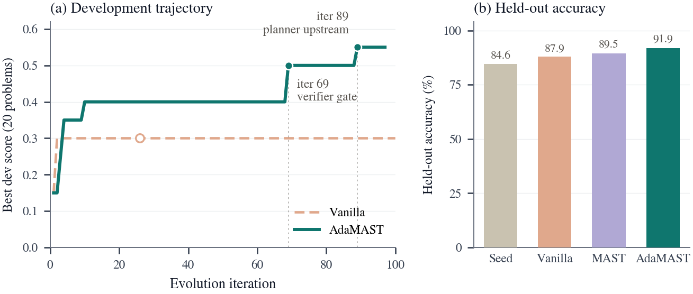
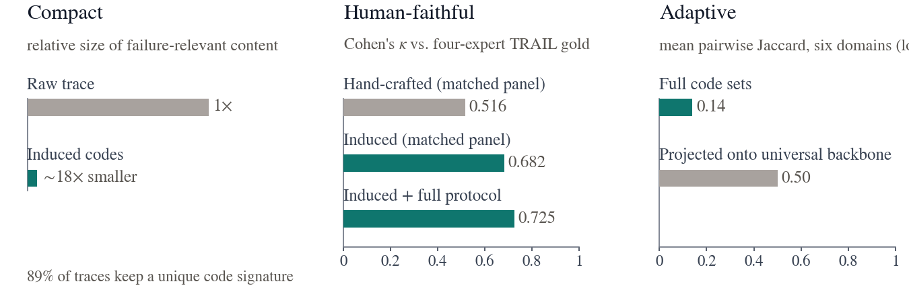

Research blog
AdaMAST: A Framework for Building Adaptive Failure Taxonomies to Improve LLM Agents
July 2026

Traces Are Evidence, Not an Interface
If you have ever tried to improve an LLM agent system without touching model weights, you have written one of these loops: sample N trajectories and pick the best one; run the agent, read what went wrong, rewrite the prompt; watch a run in flight and intervene before it commits a mistake. Each of these procedures consumes the same input (execution traces) and extracts feedback in one of two forms.
A scalar outcome (a pass rate, a verifier score) persists and compares cleanly across runs, but it records only that a trajectory failed, never why. A free-text critique (Reflexion-style reflection, self-refinement) names the why, but it is generated from scratch on every run and discarded with it. The recurring failures of your particular system (a checker that rubber-stamps its solver, a tool called retried unchanged) get re-diagnosed, in disposable prose, forever.
What's missing is an artifact that is durable, like a score, and diagnostic, like a critique: a compact vocabulary of named failure modes, produced once from the system's own traces, that downstream procedures reason over instead of long, noisy trajectories.
💡 The central claim: the raw trace need not double as the feedback interface. An agent system should maintain an explicit representation of how it fails, induced from its own behavior and reusable wherever failure feedback is needed.
AdaMAST: Fixed Axes, Induced Vocabulary
AdaMAST, an adaptive extension of MAST, converts a target system's traces into a taxonomy of named failure codes organized along three fixed axes:

- Axis A (system-level): fix the harness or orchestration (context exhaustion, premature termination).
- Axis B (role-specific): fix a discovered role's behavior (a checker that answers the prompt instead of checking).
- Axis C (domain-specific): inject task knowledge (algorithm mismatch, physical-law violations).
Only the axes are fixed, so taxonomies stay comparable across systems, and every code maps to an intervention point. The codes themselves (names, definitions, role labels, evidence patterns) are induced from the traces: no code is hand-authored, no trace is human-annotated. Concretely, induction is eight LLM calls: an analysis pass extracts the domain, the discovered roles, and recurring behavioral signals from the trace pool; a curation pass proposes candidate codes per axis, grounded in quoted trace evidence (one prompt per discovered role); and a consolidation pass merges duplicates, rejects codes without supporting evidence, and enforces coverage. The name carries lineage, not scope: for a single-agent coding harness, the role axis simply names execution phases (Edit / Plan / Verify), and for a flat pipeline, it can be empty.
Why induce the vocabulary rather than fix it in advance? MAST distilled 14 recurring failure modes from hundreds of annotated multi-agent traces and remains a strong baseline throughout this work. But any catalog fixed before the target system is observed faces a structural limit, not a quality limit: role-specific failures presuppose roles that exist only once an architecture is instantiated, and domain-specific failures presuppose task knowledge that no general catalog enumerates. No pre-committed list anticipates a competitive-programming agent committing to a greedy strategy where the problem demands dynamic programming.
Because the codes are induced, they are validated before anything trusts them: four LLM annotators label held-out traces independently, then reconcile under a bounded deliberation protocol, and the taxonomy is accepted only when they apply it consistently (mean pairwise Cohen's κ ≥ 0.75: a standard measure of inter-annotator agreement, where 1 is perfect and 0.75 counts as substantial; this gate measures annotation consistency, a different quantity from the agreement-with-human-experts κ in Figure 4). A shortfall triggers merge/add/relabel edits and a re-run. And because systems change, online refinement keeps the vocabulary tracking the current system rather than a snapshot of its past.
Three Ways AdaMAST Helps Improve Agents
The point of an interface is reuse. We reuse the same kind of induced vocabulary across three deliberately different improvement procedures.
1. Agent-system search: better targets for the mutator
In evolutionary agent search (we build on AdaEvolve), the mutation step reads the parent's failed traces and decides what to change. The default feedback is free-form LLM reflection; AdaMAST replaces it with a taxonomy-coded diagnosis: fired codes, quoted evidence, cross-problem patterns.

Coded diagnoses win on all five benchmarks (Frontier-CS competitive programming, OlympiadBench olympiad math, MMLU-Pro STEM QA, TheoremQA graduate-level math, and DROP discrete reasoning) by +3.5 to +7.5 points. On the largest held-out set (655 OlympiadBench problems), the taxonomy-guided architecture reaches 91.9% vs. 87.9% for reflection-guided search, and 89.5% for search guided by the fixed MAST checklist.
The mechanism is visible in the search trajectory: the vanilla run plateaus at dev score 0.30 and exhausts its search by iteration 26 (the open marker in Figure 3), while the taxonomy-guided run keeps finding productive edits, escaping plateaus at iterations 69 and 89. Each jump coincides with a code-driven architecture edit: first, the addition of a verification gate, then, after the coordinator-aggregation code B.6 fires, the promotion of that gate into a score boost.

2. Runtime monitoring: a failure vocabulary as a skill
At runtime, the taxonomy enters the agent's context, and the agent checks its own recent trace against it at checkpoints: reflection anchored to the system's known failure modes, with no additional LLM calls (the vocabulary rides in the agent's existing context). On SWE-bench Verified Mini, the arms form a clean ladder:
| Feedback arm | SWE-agent | Claude Code |
|---|---|---|
| Base (no reflection) | 50% | 64.0% |
| Free-text reflection | 60% | n/a |
| Fixed MAST checklist | 68% | 67.3% |
| AdaMAST | 70% | 70.7% |
Claude Code figures are a three-seed average; SWE-agent is a single seed. The free-text arm belongs to the SWE-agent ladder, where prompted reflection is the main corrective signal; Claude Code natively self-verifies by running tests between edits.
Since the three SWE-agent reflection arms share an identical scaffold and differ only in content, the ordering isolates what the reflection should say: structure accounts for most of the gain, and the induced, harness-specific vocabulary adds the rest. On Claude Code, attaching the taxonomy as a native runtime skill still lifts resolution from 64.0% to 70.7%, with the gains concentrated in verification-phase failures.
3. Trajectory selection: codes as verification criteria
Given N candidate trajectories and no ground-truth checker, which one actually succeeded? AdaMAST-Judge turns each induced code into a verification criterion (semantic failure modes become LLM scoring prompts, structural ones become cheap heuristic checks) inside an LLM-as-a-Verifier pipeline.
| Method | terminus-2 | claude-code | ForgeCode |
|---|---|---|---|
| Pass@1 (no selection) | 61.8% | 57.5% | 81.8% |
| LLM-as-a-Verifier | 71.2% | 61.2% | 86.5% |
| Fixed MAST vocabulary | 68.5% | 69.0% | 88.8% |
| AdaMAST-Judge | 73.0% | 72.4% | 89.9% |
| Best-of-5 oracle | 77.5% | 80.5% | 89.9% |
Best-of-5 selection accuracy on Terminal-Bench 2.0 (five pre-recorded trajectories per task, Claude Opus 4.6 agents, GPT-5.4 as the verifier for all methods). The MAST row runs the identical verifier pipeline with only the vocabulary swapped. On ForgeCode, both vocabularies reach the best-of-5 oracle ceiling.
Across three Terminal-Bench 2.0 harnesses, it improves best-of-5 accuracy by 8 to 15% over Pass@1, keeping a +3.4/+4.5% margin over the fixed MAST vocabulary on the two harnesses that aren't already saturated. The underlying signal is simple: passing trajectories fire fewer codes than failing ones, even a selector that just picks the candidate with the fewest fired codes lifts expected accuracy from 58% to 67% on the tasks where selection can change the outcome.
Does the Taxonomy Itself Hold Up?
Downstream gains alone do not establish that the induced representation is compact, faithful, or genuinely adaptive, so we also measure the taxonomy directly.

- Compact. Coding compresses the failure-relevant content of traces by ~18x, yet 89% of traces retain unique code signatures, preserving substantial distinctions across runs. In a functional test on Terminal-Bench, a consumer LLM predicting held-out run success performs as well with the 1.2K-token taxonomy as with the 114K-token verbatim trace pool (statistically indistinguishable balanced accuracies across two consumer models).
- Human-faithful. Under the same annotation panel and prompts, the induced vocabulary matches expert failure labels better than the benchmark's hand-crafted one (κ is 0.682 vs. 0.516; the full protocol reaches 0.725). This is a different question from the ≥ 0.75 gate earlier: that measured whether annotators applied the codes consistently; this measures whether the codes align with human experts.
- Adaptive. Six domains, mean pairwise code overlap 0.14, backbone projection 0.50. The result supports the need for adaptation: beyond a shared backbone of generic failures, each domain has a substantial vocabulary of its own, role- and task-specific.
Caveats and FAQ
🔧 Honest caveats. First, the Terminal-Bench selection gains aren't the vocabulary's alone. AdaMAST-Judge runs the codes through a learned selector that keeps only the most discriminative criteria, so the codes and that machinery share the credit. Search and runtime are the cleaner tests of the vocabulary itself; there, the codes are read directly, with nothing learned in between. Second, fixed catalogs are not straw men. On SWE-agent, the fixed 14-code MAST checklist reaches 68%, compared to AdaMAST's 70%. What the induced taxonomy adds is the long tail: the role- and domain-specific failures that no catalog written before seeing your system can include.
Isn't this just better prompting? A prompt is one consumer of the taxonomy, not the contribution itself. AdaMAST induces and validates a persistent vocabulary from traces, aggregates failures across runs, and reuses that vocabulary in search, runtime monitoring, and selection.
Does it need humans in the loop? No per-trace human annotation and no hand-authored codes. Human faithfulness is certified against expert annotations (that's how we validate the method), but the pipeline itself runs fully automatically.
Does it only work for multi-agent systems? No. The role axis adapts: multi-agent systems get role codes (13 for our competitive-programming pipeline), single-agent harnesses get phase codes (Edit/Plan/Verify for Claude Code), and flat pipelines get none.
Closing the Loop
Between raw traces and scalar outcomes sits a missing representation: named, evidence-grounded, system-specific failure modes. Agents already generate the evidence of their own failures on every run. The cheapest improvement to an agent system may be to first learn, in its own terms, how it fails.
@article{cemri2026adamast,
title={Fantastic Adaptive Taxonomies and How to Use Them},
author={Cemri, Mert and Cojocaru, Andrei and Pan, Melissa and Liu, Shu and
Agarwal, Shubham and Krentsel, Alexander and Tang, Jay and
Ramchandran, Kannan and Gonzalez, Joseph E. and Zaharia, Matei and
Dimakis, Alex and Stoica, Ion},
journal={arXiv preprint},
year={2026}
}